冲激函数 δ(t) 的性质¶
浙江大学 2022《信号与系统》（胡浩基）听课笔记（教材第 12、24 页）
1 复习：冲激函数的定义¶
重点
\(\delta_\Delta(t)\) 是从 \(0\) 到 \(\Delta\) 的方波，宽度 \(\Delta\)，高度 \(\dfrac1\Delta\)，面积为 \(1\)；
下面的性质一、二直接从这个定义出发证明；性质三起要用到「两个函数相等」的新定义（第 4 节）。
2 性质一：积分为 1¶
重点
推广到任意上下限：
▸ 证明。 对任意 \(\Delta\)，\(\delta_\Delta(t)\) 的面积是 \(\Delta\cdot\frac1\Delta=1\)，即 \(\int_{-\infty}^{+\infty}\delta_\Delta(t)\,\mathrm{d}t=1\)。所以
▸ 推广的含义。 冲激只在 \(t=0\) 一个点上「冲上去」。积分区间跨过 \(0\)（\(a\lt{}0\lt{}b\)）才积到它，结果为 \(1\)；反过来积（从大到小，\(a\gt{}0\gt{}b\)）按积分的定义变号，为 \(-1\)；区间不含 \(0\)（上下限都小于 \(0\) 或都大于 \(0\)），积分为 \(0\)。
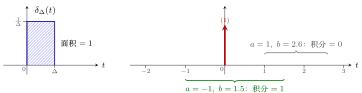
图 1 左：每个 \(\delta_\Delta(t)\) 的面积都是 \(1\)。右：积分区间跨过 \(0\) 时积到冲激，结果为 \(1\)；区间不含 \(0\) 时结果为 \(0\)。
3 性质二：筛选性¶
重点
若 \(x(t)\) 在 \(t=0\) 处连续，则
变形（冲激移到 \(t_0\)）：
\(x(t)\) 与冲激相乘再积分，只「筛」出冲激所在那一点的值。性质一是性质二在 \(x(t)\equiv1\) 时的特例。
▸ 证明。
积分中值定理：函数在一段区间上的积分，等于区间内某一点 \(\xi\) 处的函数值乘区间长度。
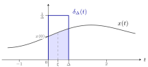
图 2 \(x(t)\,\delta_\Delta(t)\) 只在 \([0,\Delta]\) 上非零。浅蓝色是 \(\int_0^\Delta x(t)\,\mathrm{d}t=x(\xi)\Delta\)，乘 \(\frac1\Delta\) 后剩 \(x(\xi)\)；\(\Delta\to0\) 时 \(\xi\to0\)，结果是 \(x(0)\)。
4 两个函数相等的定义¶
性质三 \(x(t)\delta(t)=x(0)\delta(t)\) 的「\(=\)」两边都含冲激，不能逐点比较。要证明它，先要回答一个看似简单的问题：两个函数 \(f_1(t)\) 与 \(f_2(t)\) 什么时候相等？
4.1 定义一：逐点相等¶
重点
定义一：若对任意 \(t_0\in\mathbb{R}\)，有 \(f_1(t_0)=f_2(t_0)\)，则 \(f_1(t)=f_2(t)\)。
两条曲线必须每一点都严丝合缝地重合。这个定义太严格。
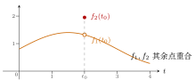
图 3 两个函数只在 \(t_0\) 一点不同。按定义一它们不相等；按下面的定义二、定义三它们相等。
4.2 定义二：只在有限个点上不等¶
如果只在一个点上不同也算相等，那么由等号的传递性，两个点、三个点……任意有限个点上不同也都必须算相等（中间插一个「只差一个点」的函数即可传递过去）。于是：
重点
定义二：若 \(f_1(t)\) 与 \(f_2(t)\) 只在有限个点上不相等，在其他点上相等，则 \(f_1(t)=f_2(t)\)。
这个定义可以用，但写法笨拙。
4.3 定义三：勒贝格的定义¶
重点
定义三（勒贝格(Lebesgue)定义）：\(f_1(t)=f_2(t)\) 是指对任意函数 \(y(t)\)，有
意思是：拿任意一个函数 \(y(t)\) 去和它们分别相乘、再积分，结果总是一样，就认为这两个函数相等。
▸ 定义三包含定义二。 若 \(f_1\)、\(f_2\) 只在有限个点上不同，则 \(y(t)f_1(t)\) 与 \(y(t)f_2(t)\) 也只在这有限个点上不同；按黎曼积分的定义，改动有限个点上的值不改变积分值，所以两个积分相等。
说明
-
「任意 \(y(t)\)」不包括 \(\delta(t)\) 这类奇异函数：\(y(t)\) 不能取冲激。
-
「在有限个点上不等」指这些点上都是确定的有限值。若一个函数在某点有冲激、另一个没有，它们不相等。
-
若某个 \(y(t)\) 让积分不收敛（例如趋于 \(+\infty\)），则要求两边同时不收敛、且趋向相同。
例 1 区间上不同的两个函数 不相等
题目：\(f_1(t)\) 与 \(f_2(t)\) 在 \([t_1,t_2]\) 以外处处相等，在 \([t_1,t_2]\) 上 \(f_2(t)\gt{}f_1(t)\)。按定义三，它们相等吗？
解：不相等。只需找一个反例 \(y(t)\)：取 \(y(t)\) 在 \([t_1,t_2]\) 上为 \(1\)、其他地方为 \(0\)。则
由于 \(t_1\le t\le t_2\) 时 \(f_2(t)\gt{}f_1(t)\)，所以后者严格大于前者，两个积分不等。哪怕这一段区间很短，两个函数也不相等。
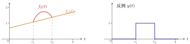
图 4 左：\(f_2\) 只在 \([t_1,t_2]\) 上高于 \(f_1\)。右：取 \(y(t)\) 为 \([t_1,t_2]\) 上的方波，两个积分不等，所以 \(f_1\ne f_2\)。
例 2 单位阶跃 u(t) 在 0 点的取值 可以任取
题目：\(u(t)=\begin{cases}1,&t\gt{}0\\0,&t\lt{}0\end{cases}\)，\(u(0)\) 等于多少？
解：可以是任意值。设
两者只在 \(t=0\) 一点不同，任何 \(y(t)\) 与它们相乘后积分都一样。由定义三，\(u_1(t)=u_2(t)\)，是同一个函数。
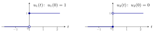
图 5 实心点是该点的取值，空心点表示不取。两者只差 \(t=0\) 一个点，按定义三是同一个函数。
例 3 系统 y(t)=t·x(t) 是否可逆 可逆
题目：系统 \(y(t)=t\,x(t)\) 可逆吗？
解：\(t\ne0\) 时 \(x(t)=y(t)/t\)，可以由输出恢复输入；只有 \(t=0\) 一个点恢复不出来。按定义三，只差一个点的两个函数是同一个函数，所以可以认为这个系统可逆。
说明
平时做题不必走极端：例如问 \(u(3)\) 等于多少，答 \(1\) 即可。「在个别点上取值可以任意」只用于理解两个函数为什么相等，不要拿来否定常规的结论。
4.4 勒贝格积分：横着数钱¶
▸ 黎曼积分(Riemann integral)。 高等数学里学的积分：把横轴切成一小段一小段，每段竖着取一个小矩形再相加。勒贝格的比喻是「竖着数钱」。
▸ 勒贝格积分(Lebesgue integral)。 把纵轴切成一层一层，每一层横着取出函数值落在这一层的那些 \(t\)，再相加，即「横着数钱」。
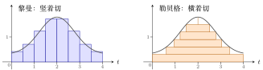
图 6 同一个函数的两种近似求面积方法。左：按 \(t\) 切成竖条；右：按函数值切成横条，每条的长度是「函数值不低于这一层的 \(t\) 的范围」。
重点
-
凡是黎曼可积的函数，勒贝格积分也能积，而且结果一样。
-
有些函数黎曼积分积不出来，勒贝格积分能积。经典例子是狄利克雷函数(Dirichlet function)：
\[ D(t)=\begin{cases}1,&t\text{ 为有理数}\\0,&t\text{ 为无理数}\end{cases},\qquad \int_0^1D(t)\,\mathrm{d}t=0\ (\text{勒贝格积分}). \]任意小的区间里都既有有理数又有无理数，竖着切怎么切都积不出来。
-
用勒贝格积分理解定义三，定义二中的「有限个点」可以放宽为可数个点（第 5 节）：两个函数在可数个点上不等、其他点相等，仍然相等。例如两个函数在所有有理数点上都不等、在所有无理数点上相等，它们仍然相等。
5 可数集与不可数集¶
无限集合分为两类：可数无限集（简称可数集(countable set)）和不可数集(uncountable set)。这个区分由康托(Cantor)给出，是实变函数的基础。
5.1 两个无限集「一样多」¶
重点
若存在一个由无限集 \(A\) 到无限集 \(B\) 的一一映射(bijection)，就称 \(A\) 与 \(B\) 一样多，也叫等势或基数相同。
一一映射：\(A\) 中每个元素唯一对应 \(B\) 中一个元素，\(B\) 中每个元素也唯一对应 \(A\) 中一个元素，没有重复，也没有遗漏。
例 1 自然数与偶数 一样多
对应 \(n\leftrightarrow 2n\)：
| 自然数 | \(1\) | \(2\) | \(3\) | \(4\) | \(5\) | \(\cdots\) |
| 偶数 | \(2\) | \(4\) | \(6\) | \(8\) | \(10\) | \(\cdots\) |
没有重复也没有遗漏，所以自然数与偶数一样多。同理，自然数与奇数也一样多。
例 2 自然数与整数 一样多
按 \(0,1,-1,2,-2,3,-3,\dots\) 的顺序编号：
| 自然数 | \(1\) | \(2\) | \(3\) | \(4\) | \(5\) | \(6\) | \(7\) | \(8\) | \(9\) | \(\cdots\) |
| 整数 | \(0\) | \(1\) | \(-1\) | \(2\) | \(-2\) | \(3\) | \(-3\) | \(4\) | \(-4\) | \(\cdots\) |
每个整数都排到了一个位置，所以一样多。
例 3 自然数与有理数 一样多
有理数都能写成 \(\frac mn\)（\(m,n\) 为整数）。先把所有正有理数排成一张表：第 \(n\) 行是分母为 \(n\) 的数（重复的如 \(\frac22\) 也先写上占位）。再按康托的折线排序走一遍：
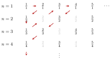
图 7 折线排序：\(\frac11\to\frac21\to\frac12\to\frac13\to\frac22\to\frac31\to\frac41\to\frac32\to\frac23\to\frac14\to\cdots\)。灰色的 \(\frac22,\frac42,\frac33,\frac24,\frac44\) 与前面重复，走到时跳过。
编号时先放 \(0\)，之后每走到一个新的正有理数，就紧跟着写上它的相反数：
| 自然数 | \(1\) | \(2\) | \(3\) | \(4\) | \(5\) | \(6\) | \(7\) | \(8\) | \(9\) | \(10\) | \(\cdots\) |
| 有理数 | \(0\) | \(1\) | \(-1\) | \(2\) | \(-2\) | \(\frac12\) | \(-\frac12\) | \(\frac13\) | \(-\frac13\) | \(3\) | \(\cdots\) |
所有有理数都会被排到一个位置，所以自然数与有理数一样多。
5.2 可数集与不可数集¶
重点
-
可数集：与自然数集一样多（等势、基数相同）的集合。偶数集、整数集、有理数集都是可数集。
-
实数集不可数：实数比自然数多，无法从头到尾、不重复不遗漏地排成一列。
例 4 实数集不可数（对角线法） 反证法
只看 \((0,1)\) 内的实数。假设它们可数，就能排成一列（以下数字只是举例）：
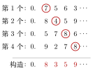
图 8 构造一个新数：第 \(k\) 位故意取得和第 \(k\) 个数的第 \(k\) 位（红圈）不一样，例如 \(7\to8\)、\(4\to3\)、\(8\to5\)、\(8\to9\)。
新数 \(0.8359\cdots\) 与第 \(k\) 个数至少在第 \(k\) 位上不同，所以不在这一列里。这与「所有实数都排进去了」矛盾，因此 \((0,1)\) 内的实数不可数，实数集不可数。
5.3 一小段实数与整条实数轴一样多¶
▸ 两段区间。 \([0,1]\) 与 \([3,7]\) 一样多：取 \(b=4a+3\)，\(a=0\mapsto b=3\)，\(a=1\mapsto b=7\)，是一一映射。
▸ 一段区间与整条实数轴。 \(\left(-\frac\pi2,\frac\pi2\right)\) 与 \((-\infty,+\infty)\) 一样多：取 \(b=\tan a\)，\(a\to\pm\frac\pi2\) 时 \(b\to\pm\infty\)，中间一一对应。再先用线性映射把 \((0,1)\) 变到 \(\left(-\frac\pi2,\frac\pi2\right)\)，就知道 \((0,1)\) 也和整条实数轴一样多。
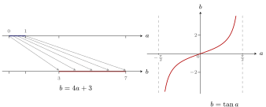
图 9 左：\([0,1]\) 上每个点线性对应到 \([3,7]\) 上一个点。右：\(\tan a\) 把 \(\left(-\frac\pi2,\frac\pi2\right)\) 一一对应到整条实数轴。
例 5 线段与正方形一样多 交错取位
题目：线段 \([0,1]\) 上的点，与单位正方形 \([0,1]\times[0,1]\) 上的点，哪个多？
解：一样多。正方形上的点写成 \((a,b)\)，\(a,b\in[0,1]\)；把 \(a\)、\(b\) 的小数位交错抄成一个数 \(c\)：
（\(c\) 的奇数位来自 \(a\)，偶数位来自 \(b\)。）反过来，从 \(c\) 的奇数位、偶数位又能拆回 \(a\) 和 \(b\)。这建立了正方形与线段之间的一一对应。
说明
严格的证明还要处理 \(0.0999\cdots=0.1\) 这类有两种小数写法的数，这里只讲构造思路。
6 性质三：与冲激相乘¶
重点
变形：
这里的「\(=\)」按定义三理解。
▸ 证明（基于定义三）。 对任意 \(y(t)\)，比较两边与 \(y(t)\) 相乘后的积分：
左边把 \(x(t)y(t)\) 整体看成一个函数，用性质二；右边先把常数 \(x(0)\) 提出来，再用性质二。两边相等，由定义三，命题成立。变形的证明完全一样：两边乘 \(y(t)\) 再积分，用性质二的变形。
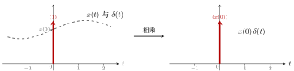
图 10 \(x(t)\) 乘冲激，只有 \(t=0\) 处的值 \(x(0)\) 起作用：结果是强度为 \(x(0)\) 的冲激（括号里的数是强度，不是高度）。
7 性质四：尺度变换¶
重点
变形：
▸ 证明（基于定义三）。 对任意 \(y(t)\)：
右边：\(\displaystyle\int_{-\infty}^{+\infty}y(t)\,\frac1{|a|}\,\delta(t)\,\mathrm{d}t=\frac1{|a|}\,y(0)\)（性质二）。
左边：\(\displaystyle\int_{-\infty}^{+\infty}y(t)\,\delta(at)\,\mathrm{d}t\)，换元 \(t'=at\)，\(t=\frac{t'}a\)，\(\mathrm{d}t=\frac{\mathrm{d}t'}a\)。要按 \(a\) 的正负讨论积分上下限：
-
\(a\gt{}0\)：\(t\) 从 \(-\infty\) 到 \(+\infty\) 时，\(t'\) 也从 \(-\infty\) 到 \(+\infty\)，
\[ \text{左边}=\frac1a\int_{-\infty}^{+\infty}y\!\left(\frac{t'}a\right)\delta(t')\,\mathrm{d}t'=\frac1a\,y(0). \] -
\(a\lt{}0\)：\(t\) 从 \(-\infty\) 到 \(+\infty\) 时，\(t'\) 从 \(+\infty\) 到 \(-\infty\)，上下限颠倒，翻回来要加负号，
\[ \text{左边}=\frac1a\int_{+\infty}^{-\infty}y\!\left(\frac{t'}a\right)\delta(t')\,\mathrm{d}t' =-\frac1a\int_{-\infty}^{+\infty}y\!\left(\frac{t'}a\right)\delta(t')\,\mathrm{d}t'=-\frac1a\,y(0). \]
两种情况合起来，左边 \(=\frac1{|a|}y(0)=\) 右边。由定义三，命题成立。变形用同样的方法证明。
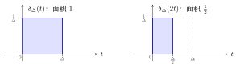
图 11 以 \(a=2\) 为例：\(\delta_\Delta(2t)\) 宽度压缩一半、高度不变，面积变成 \(\frac12\)。取极限得 \(\delta(2t)=\frac12\delta(t)\)。
8 函数相等与卷积¶
定义三下的「相等」和卷积完全兼容，可以放心地用来分析 LTI 系统。
重点
定理：若 \(h_1(t)=h_2(t)\)（按定义三），则对任意 \(x(t)\)，有
逆命题也成立：若对任意 \(x(t)\) 都有 \(x(t)\ast h_1(t)=x(t)\ast h_2(t)\)，则 \(h_1(t)=h_2(t)\)。
▸ 为什么需要证明。 按定义三，\(h_1=h_2\) 并不保证两者每一点都相等，所以「代进卷积公式结果一样」不是显然的。
▸ 证明。
▸ 第二个等号的换元。 令 \(\tau'=t-\tau\)，则 \(\tau=t-\tau'\)，\(\mathrm{d}\tau=-\mathrm{d}\tau'\)；\(\tau=-\infty\) 时 \(\tau'=+\infty\)，\(\tau=+\infty\) 时 \(\tau'=-\infty\)。于是
最后把 \(\tau'\) 改写回 \(\tau\) 即可。
▸ 第三个等号。 对固定的 \(t\)，\(x(t-\tau)\) 是 \(\tau\) 的一个函数，相当于定义三中的 \(y(\tau)\)；\(h_1=h_2\) 意味着它与 \(h_1(\tau)\)、\(h_2(\tau)\) 分别相乘积分的结果相同。
9 性质五：冲激的复合¶
重点
设 \(f(t)\) 的所有零点为 \(t_i\)（即 \(f(t_i)=0\)），且 \(f'(t_i)\ne0\)，则
这条性质出自郑君里《信号与系统》；证明方法仍是两边乘 \(y(t)\) 再积分。
\(f(t)\) 每过一次零点，\(\delta(f(t))\) 就在那里产生一个冲激，强度是该点斜率绝对值的倒数：\(f(t)\) 穿过零点越陡，冲激越弱。
例 1 性质四是性质五的特例 \(f(t)=at\)
取 \(f(t)=at\)（\(a\ne0\)）。当且仅当 \(t=0\) 时 \(f(t)=0\)；\(f'(t)=a\)，所以 \(f'(0)=a\)。代入性质五：
正是性质四。
例 2 \(\delta(t^2-3t+2)\) \(\delta(t-1)+\delta(t-2)\)
解：\(f(t)=t^2-3t+2=(t-1)(t-2)\)，当且仅当 \(t=1\)、\(t=2\) 时 \(f(t)=0\)。\(f'(t)=2t-3\)，所以 \(f'(1)=-1\)，\(f'(2)=1\)。代入性质五：
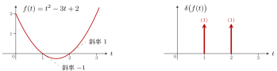
图 12 左：\(f(t)\) 在 \(t=1\)、\(t=2\) 处过零，斜率分别为 \(-1\)、\(1\)。右：\(\delta(f(t))\) 在这两点各有一个强度为 \(1\) 的冲激。
例 3 \(\delta(\cos t)\) 与 \(\delta(\sin t)\) 每隔 \(\pi\) 一个冲激
解：设 \(f(t)=\cos t\)，当且仅当 \(t=k\pi+\frac\pi2\)（\(k\in\mathbb{Z}\)）时 \(f(t)=0\)。\(f'(t)=-\sin t\)，
（正负交替，但绝对值恒为 \(1\)）。代入性质五：
同理，\(\sin t\) 的零点是 \(t=k\pi\)，且 \(|\cos k\pi|=1\)，所以
例 4 \(\int_{-2\pi}^{2\pi}(1+t)\,\delta(\cos t)\,\mathrm{d}t\) 教材第 33 页 1-20(3) 结果为 4
解：由上一例，\(\delta(\cos t)\) 在每个 \(k\pi+\frac\pi2\) 处有一个强度为 \(1\) 的冲激。积分区间 \([-2\pi,2\pi]\) 里只有四个：\(-\frac{3\pi}2,\ -\frac\pi2,\ \frac\pi2,\ \frac{3\pi}2\)（\(\pm\frac{5\pi}2\) 在区间外）。
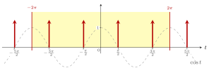
图 13 灰色虚线是 \(\cos t\)，红色箭头是 \(\delta(\cos t)\) 的冲激（强度均为 \(1\)），落在 \(\cos t\) 的每个零点上。黄色是积分区间 \([-2\pi,2\pi]\)，里面只有四个冲激。
每一项用性质二的变形 \(\int x(t)\,\delta(t-t_0)\,\mathrm{d}t=x(t_0)\)（冲激在积分区间内部，积分限不必是 \(\pm\infty\)）：
含 \(\pi\) 的项两两抵消。
10 冲激函数的多样性¶
10.1 判定一个函数是不是 \(\delta(t)\)¶
\(\delta(t)\) 不只有「\([0,\Delta]\) 上的窄方波取极限」这一种写法，很多不同的极限都等于它。判定方法：
重点
要证明一个函数 \(f(t)\) 是 \(\delta(t)\)，只需证明对任意函数 \(y(t)\) 有
理由有两条：一是性质二，\(\int y(t)\,\delta(t)\,\mathrm{d}t=y(0)\)；二是定义三，与任意 \(y(t)\) 相乘积分结果都相同的两个函数相等。
10.2 对称的窄方波¶
有的教材把 \(\delta_\Delta(t)\) 定义为 \(\left[-\frac\Delta2,\frac\Delta2\right]\) 上高度为 \(\frac1\Delta\) 的方波，再令 \(\Delta\to0\)。两种定义都对。
▸ 证明。
10.3 三角形脉冲¶
\(\delta_\Delta(t)\) 取底边为 \([-\Delta,\Delta]\)、顶点高度为 \(\frac1\Delta\) 的三角形（面积 \(\frac12\cdot2\Delta\cdot\frac1\Delta=1\)），\(\Delta\to0\) 时同样等于 \(\delta(t)\)。证明方法相同，只是积分要分左右两段讨论，计算更繁琐。
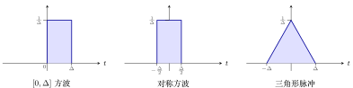
图 14 三种 \(\delta_\Delta(t)\)，面积都是 \(1\)。\(\Delta\to0\) 时三者都等于 \(\delta(t)\)。
10.4 抽样函数的极限¶
重点
这个结论在第三章还会用到，即使记不住证明，也要记住结论。
▸ 直观理解。 \(\dfrac{\sin(\omega t)}{\pi t}\) 是一个抽样函数（Sa 函数）的形状（\(\omega\gt{}0\)）：
-
\(t=0\) 处取极限值 \(\dfrac\omega\pi\)；
-
零点在 \(t=\pm\dfrac\pi\omega,\ \pm\dfrac{2\pi}\omega,\dots\)；
-
\(\displaystyle\int_{-\infty}^{+\infty}\frac{\sin(\omega t)}{\pi t}\,\mathrm{d}t=1\)，与 \(\omega\) 无关。
\(\omega\to+\infty\) 时，中间的峰冲向无穷大，零点 \(\frac\pi\omega\to0\)，整个波浪被向中间无限压缩、两侧被压平；而面积始终为 \(1\)，和性质一吻合。看起来就像一个冲激。
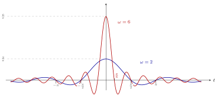
图 15 \(\frac{\sin(\omega t)}{\pi t}\)。蓝：\(\omega=2\)，峰值 \(\frac2\pi\)，第一个零点 \(\frac\pi2\)；红：\(\omega=6\)，峰值 \(\frac6\pi\)，第一个零点 \(\frac\pi6\)。两条水平虚线标出两个峰值。\(\omega\) 越大，峰越高越窄，面积始终为 \(1\)。
▸ 引理。 若 \(x(t)\) 不是无限振荡的函数，则
直观理解：\(\omega\) 很大时 \(\cos(\omega t)\) 上下振荡极快。相邻的半个周期里，\(\cos\) 一正一负，而 \(x(t)\) 变化平缓、取值几乎一样，所以 \(x(t)\cos(\omega t)\) 在相邻两段上的积分一正一负、互相抵消，总积分趋于 \(0\)。只有 \(x(t)\) 自己也变化得极其剧烈（无限振荡），才抵消不掉。
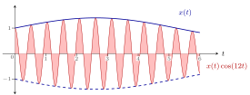
图 16 蓝线是平缓的 \(x(t)\)，红色是 \(x(t)\cos(\omega t)\)（\(\omega=12\)）。正、负两部分面积几乎一样，积分几乎为 \(0\)；\(\omega\) 越大抵消越彻底。
▸ 引理在 \(x(t)\) 可导时的证明。 用分部积分：
方括号和后面的积分都是有限值，前面乘 \(\frac1\omega\)；\(\omega\to+\infty\) 时两项都趋于 \(0\)。\(\sin\) 的情况同理。（只要求 \(x(t)\) 不是无限振荡的版本更一般，证明更难。）
▸ 证明 \(\lim\limits_{\omega\to+\infty}\frac{\sin(\omega t)}{\pi t}=\delta(t)\)。 由判定方法，只需证明对任意 \(y(t)\)：
左边 \(=\lim\limits_{\omega\to+\infty}\displaystyle\int_{-\infty}^{+\infty}\frac{y(t)}{\pi t}\sin(\omega t)\,\mathrm{d}t\)。
不能直接套引理：若 \(y(0)\ne0\)，\(\frac{y(t)}{\pi t}\) 在 \(t\to0^-\) 时趋于 \(\mp\infty\)、\(t\to0^+\) 时趋于 \(\pm\infty\)，在 \(0\) 点附近变化无限剧烈，不满足引理的条件。
做法：减一个 \(y(0)\) 再加回来：
-
(A)：设 \(x(t)=\dfrac{y(t)-y(0)}{\pi t}\)。\(t\to0\) 时分子、分母都趋于 \(0\)，由洛必达法则 \(x(0)=\lim\limits_{t\to0}\dfrac{y'(t)}{\pi}=\dfrac{y'(0)}{\pi}\)，即
\[ x(t)=\begin{cases}\dfrac{y(t)-y(0)}{\pi t},&t\ne0\\[6pt]\dfrac{y'(0)}{\pi},&t=0\end{cases}, \]不再是无限振荡的函数，可以用引理：(A) \(=0\)。
-
(B)：对任意 \(\omega\gt{}0\)，积分恒等于 \(1\)，所以 (B) \(=1\)。
因此左边 \(=0+y(0)\cdot1=y(0)\)，命题成立。
10.5 另一个例子¶
也成立（郑君里《信号与系统》习题集）。